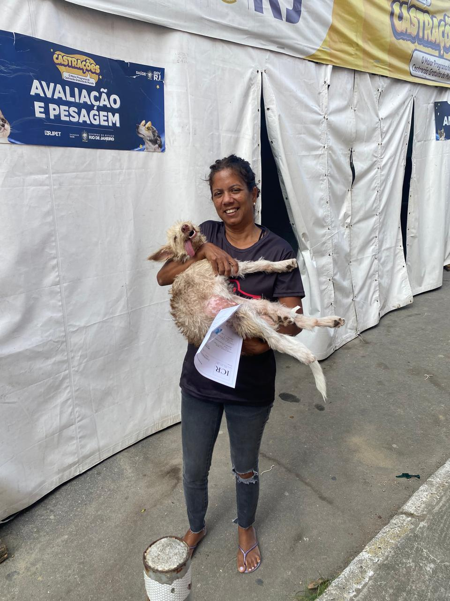

História Marcante de Superação: A cachorrinha "Orelhuda" foi encontrada magra e debilitada perto de uma pista. Após ser resgatada, tratada de TVT e doença do carrapato, ela foi castrada, vacinada e adotada por uma família maravilhosa!
Doação de Rações 🐾
Nossa História de Luta: Há 20 anos dedicamos nossa vida ao resgate e proteção animal em Nova Iguaçu. Tudo começou com o resgate de uma cachorrinha com sarna severa no trabalho.
Há 20 anos, a nossa fundadora atua na causa animal em Nova Iguaçu. Tudo começou de forma inesperada: trabalhando no Detran, ela se deparou com uma cachorrinha em estado crítico — magra, sem pelos, sofrendo de sarna e com infecções graves. Era dezembro, o órgão entraria em recesso e ela ficou angustiada pensando em quem cuidaria daquele animal. Seu marido então disparou: 'Leva ela, você cuida e depois vê o que faz'. Foi o pontapé inicial de uma vida inteira dedicada ao resgate. O que era um resgate pontual virou missão de vida. Começou a acolher mais um, e mais um, até que a casa em apartamento ficou pequena e foi preciso estruturar um espaço adequado. Hoje, mantemos um abrigo no bairro Caonze (além do suporte na residência principal), acolhendo cerca de 40 animais entre cães resgatados das ruas, casos de abandono e reabilitação. Cada animal que chega traz uma história de superação. Como a da nossa inesquecível 'Orelhuda' (ou Dumbo): encontrada magrinha revirando lixo perto de uma pista movimentada, assustada e com diversas doenças graves — incluindo TVT (tumor venéreo transmissível) e doença do carrapato. Após muito tratamento, carinho, castração e vacinação, ela se recuperou, participou de feiras de adoção com direito a roupinha nova e hoje vive feliz com uma família maravilhosa, viajando para a praia e recebendo todo o amor que merecia. É por histórias como essa que nunca paramos